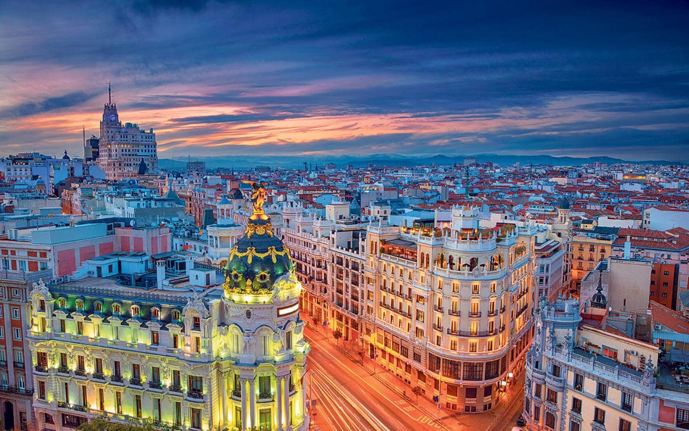

The Vacation of Your Dreams: Questionnaire
A Questionnaire to find your perfect vacation destination!
If you like TROPICAL destinations
Congratulations! You picked "TROPICAL" destinations are your perfect vacation choice! Tropical destinations offer a chance to rest and recouparate in paradise! Tropical destinations include places like Hawaii, the Bahamas, the Caribbean, and the Maldives islands! Tropical destinations are best for those who like sun, surf, and beaches. These are perfect destinations for honeymooners, too!


If you like METROPOLITAN destinations
Congratulations! You picked "METROPOLITAN" destinations are your perfect vacation choice! Metropolitan destinations offer a chance to see the sights, hear the sounds, and enjoy the BIG CITY! Metropolitan destinations include places like New York City, London, Tokyo, and Sydney! Metropolitan destinations are best for those who like bright lights, hustle and bustle, museums, and shopping. These are perfect destinations for Urbanites!


If you like SCENIC destinations
Congratulations! You picked "SCENIC" destinations are your perfect vacation choice! Scenic destinations offer a chance to see the world! Scenic destinations include places like Madrid, Amsterdam, and Rome! Scenic destinations are best for those who like traveling to new places. These are perfect destinations for travel bugs!


If you like RUSTIC destinations
Congratulations! You picked "RUSTIC" destinations are your perfect vacation choice! Rustic destinations offer a chance to relax in a tranquil setting! Rustic destinations include places like the mountains and countrysides! Rustic destinations are best for those who like peace and quiet. These are perfect destinations for weekend warriors, too!